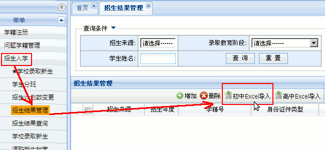
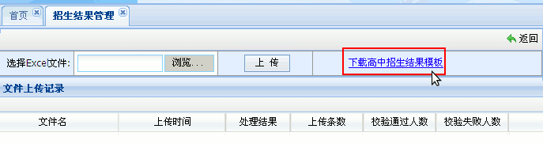
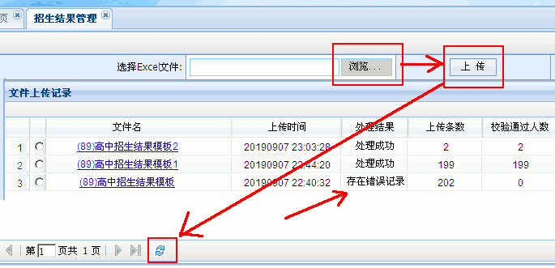
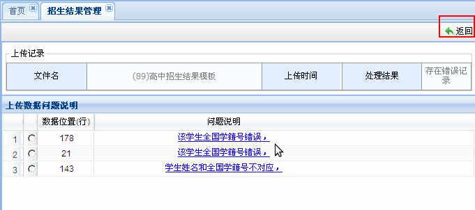

全国中小学生学籍管理系统操作指南
作者：TeliuTe 来源：基础教程网
四、学校录取新生 返回目录 下一课先按照第2课里的操作，添加年级和班级；
1、学校录取新生
1）将招生计划数上报给上级管理员，通过QQ或其他联系方式，
2）假如要修改计划数，点右上角“学籍管理”按钮，再在左侧栏点“招生入学－招生计划数变更申请－申请更改计划数”；
2a）选择教育阶段，小学或初中，再在“申请招生人数”中输入人数，可以比实际多一些，以方便后面补招，等待上一级主管审核通过；

3）再在左侧栏点“招生入学－招生结果管理”，在右边面板中间点“初中Excel导入”，高中的也一样；

4）在出来的面板中，点右边的下载模板，将“综合查询－毕业生查询”里导出的信息: http://teliute.org/mix/Texj/lesson23/lesson23.html ，粘贴进来；

5）将模板文件粘贴信息，保存好之后，在回来点”浏览－上传“，找到保存的模板，稍等点一下下边的刷新按钮，看导入结果；

6）如果提示错误，就点蓝色链接，进去看一下原因，再点右上角”返回“；

7）导入成功后，在左边点”学校录取新生“，右边点”查询“，出来学生后，全部选中，点右边的”录取“，重复即可；

5）录取后的学生，等待上一级主管审核通过，在左边的”招生结果查询“里，点”查询“，最后面看状态；
6）上级审核通过后，点左侧栏“调取新生档案”，在右边的面板中，选择全部学生，点右上角的绿色“调档”按钮；

本节学习了的学校录取新生基础知识，如果你成功地完成了练习，请继续学习下一课内容；
本教程由TeliuTe制作|著作权所有
基础教程网：http://teliute.org/
美丽的校园……
转载和引用本站内容，请保留作者和本站链接。